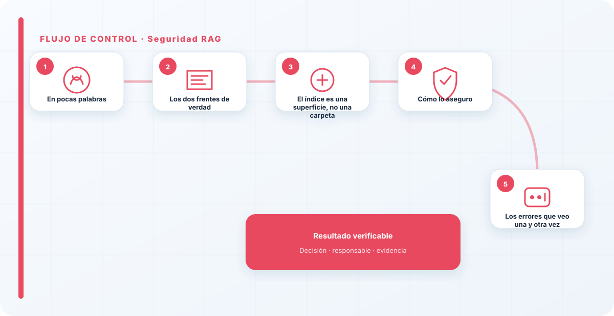
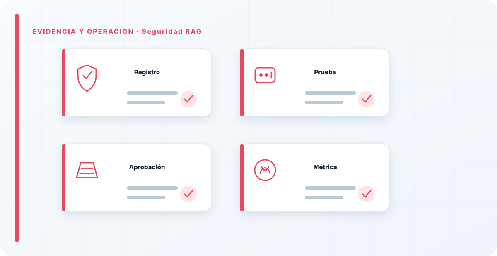

En pocas palabras
El RAG —dar al modelo documentos para que responda con tus datos— es la arquitectura más común en las empresas y también una de las más malentendidas en seguridad. La gente protege el modelo con esmero y se olvida de que el contexto que se recupera también puede atacar: un documento envenenado con instrucciones ocultas, o simplemente un dato que ese usuario no debería poder ver. En un RAG, la seguridad no está solo en el modelo; está, sobre todo, en qué entra al índice y en quién puede recuperar qué.
Los dos frentes de verdad
Cuando audito un RAG, casi todos los problemas caen en dos frentes. El primero es la inyección indirecta: un documento recuperado contiene instrucciones que el modelo obedece como si vinieran del usuario legítimo. El atacante no interactúa contigo; deja su instrucción en un fichero que sabe que tu RAG va a indexar y recuperar. Es un ataque a distancia y en diferido.
El segundo, más silencioso y más frecuente, es el control de acceso. Si el índice mezcla documentos de distintos niveles de confidencialidad y cualquiera puede preguntar, el RAG se convierte en una máquina de filtrar datos a quien no debería verlos. Volcar un repositorio entero al índice "por comodidad" es el error clásico, y convierte tu asistente en un buscador de información sensible sin permisos.
El índice es una superficie, no una carpeta
El cambio de mentalidad que le pido a todo el mundo es este: el índice de tu RAG no es una carpeta interna inofensiva. Es dos cosas a la vez —una superficie de entrada al modelo y un repositorio de datos sensibles— y ambas hay que protegerlas. Todo lo que entra al índice puede acabar influyendo en las respuestas, y todo lo que hay en el índice puede acabar saliendo por una consulta. Tratarlo con la ligereza de un directorio compartido es el origen de la mayoría de los incidentes de RAG.

Cómo lo aseguro
Filtro la fuente: solo entra al índice lo que está clasificado y saneado, no todo lo que hay en un disco. Aplico control de acceso a la recuperación: el usuario solo puede recuperar lo que tiene permiso de ver, exactamente igual que en cualquier sistema de ficheros; los permisos no desaparecen porque haya un modelo por medio. Trato el contenido recuperado como entrada no confiable —lo mismo que el prompt del usuario—, con validación y guardrails. Y cifro los índices vectoriales y las cachés, que son datos como cualquier otro y que a menudo se dejan al descubierto.
La mayoría de estas defensas no son de IA, son de gobierno del dato de toda la vida aplicado a un sitio nuevo. Por eso ligo la seguridad del RAG con la clasificación del dato: un RAG es tan seguro como el gobierno del dato que tiene detrás.
El fallo que más veo es tratar el índice del RAG como una carpeta interna inofensiva. No lo es: es una superficie de entrada al modelo y un repositorio de datos sensibles a la vez. Si en tu RAG cualquiera puede preguntar y el índice tiene de todo, no tienes un asistente, tienes una fuga de datos con buena interfaz. La clasificación del dato antes de indexarlo no es opcional, es lo que separa un RAG de un incidente.
Los errores que veo una y otra vez
- Volcar todo al índice sin clasificar ni filtrar.
- No aplicar permisos a la recuperación: todos ven todo.
- Confiar en el contenido recuperado como si fuera seguro.
- Olvidar cifrar índices vectoriales y cachés.
- Proteger el modelo y no la fuente de datos.
- Tratar el índice como un directorio compartido inofensivo.
Cómo lo llevaría a un entorno real
Cuando aterrizo seguridad rag en una organización, no empiezo por comprar una herramienta ni por redactar veinte páginas. Empiezo por dibujar qué ocurre hoy: quién solicita el cambio, quién lo aprueba, qué sistemas intervienen, qué datos cruzan el proceso y quién se entera cuando algo falla. Ese dibujo suele descubrir más problemas que cualquier checklist. En seguridad de IA, lo peligroso no es solo carecer de controles; también lo es creer que existen porque alguien los escribió una vez.
Después separo lo imprescindible de lo deseable. Lo imprescindible debe poder comprobarse: un responsable identificado, una regla clara, una evidencia fechada y un mecanismo para reaccionar. En este caso revisaría especialmente fuentes documentales, índice vectorial y retrieval. No me vale una respuesta del tipo «lo gestiona el proveedor» o «eso lo mira seguridad». Necesito saber qué persona toma la decisión, con qué información y dentro de qué plazo.
La implantación debe crecer con el riesgo. Un piloto interno puede funcionar con una ficha breve y una revisión manual. Un sistema que afecta a clientes, empleados, dinero o información sensible necesita segregación de funciones, pruebas independientes, monitorización y un expediente mantenido. Mi criterio es sencillo: cuanto más difícil sea deshacer el daño, más fuerte debe ser la barrera antes de producción.
Decisiones que deben quedar por escrito
Hay decisiones que no deberían vivir en una reunión ni en un mensaje de chat. Para seguridad rag dejaría documentados el alcance, los supuestos, los límites de uso, las excepciones aceptadas y las condiciones que obligan a detener o reevaluar. El documento no tiene que ser enorme, pero sí debe permitir que otra persona entienda por qué se hizo lo que se hizo.
También registraría quién puede cambiar contexto, quién valida permisos y quién recibe las alertas relacionadas con poisoning. Cuando esas tres responsabilidades se mezclan, aparece el clásico problema: el mismo equipo construye, aprueba y declara que todo funciona. No siempre se puede separar por completo, sobre todo en organizaciones pequeñas, pero al menos debe existir una revisión por alguien que no dependa del éxito inmediato del despliegue.
Las excepciones merecen un tratamiento propio. Una excepción sin fecha de caducidad acaba convirtiéndose en la arquitectura real. Por eso exigiría motivo, riesgo aceptado, responsable, compensaciones, fecha de revisión y criterio de cierre. Si falta uno de esos elementos, no es una excepción gestionada; es una deuda invisible.

Un ejemplo práctico
Imaginemos que un equipo quiere incorporar seguridad rag a un servicio que ya está en producción. La propuesta promete reducir tiempos y automatizar tareas, pero utiliza componentes que cambian con frecuencia. Antes de aprobarlo, pediría una prueba limitada, un inventario de dependencias, un flujo de datos y una definición clara de qué acciones quedan fuera del alcance.
Durante la prueba recogería resultados normales y casos límite. No solo miraría si funciona; comprobaría qué ocurre cuando faltan datos, cambia una versión, se pierde conectividad, llega una entrada manipulada o un usuario intenta superar sus permisos. Ahí es donde se ve si el diseño aguanta. En muchas pruebas felices todo parece seguro porque nadie ha intentado romper la hipótesis de partida.
Si los resultados son aceptables, la salida a producción tendría condiciones: versión fijada, configuración aprobada, logs disponibles, responsables de guardia, procedimiento de rollback y revisión tras las primeras semanas. Si alguno de esos elementos no existe, prefiero retrasar el despliegue. Un día de demora suele ser más barato que investigar después un comportamiento que nadie puede reconstruir.
Qué evidencias guardaría
Para demostrar que el control funciona conservaría evidencias que cuenten una historia completa, no capturas sueltas. La historia debe enlazar necesidad, decisión, implementación, prueba y operación. En seguridad rag eso incluye como mínimo la ficha del activo, el diagrama vigente, la configuración aprobada, el resultado de las pruebas y el registro de cambios.
No guardaría información por acumular. Si los logs contienen prompts, documentos, datos personales o secretos, aplicaría minimización, control de acceso y retención. La evidencia debe ayudar a investigar y auditar sin crear una segunda fuga de información. Es frecuente endurecer el sistema principal y dejar un repositorio de evidencias abierto a demasiadas personas.
- Propietario y finalidad de seguridad rag, con fecha de revisión.
- Inventario de fuentes documentales, índice vectorial y dependencias asociadas.
- Criterios de aceptación y resultados sobre retrieval y contexto.
- Configuración efectiva, versión y aprobación del cambio.
- Alertas, incidentes, excepciones y acciones correctivas cerradas.
Señales de que el control no está funcionando
El primer síntoma es que nadie sabe responder con rapidez quién es el responsable. El segundo es que la documentación describe una versión distinta de la que está operando. El tercero es que las alertas existen, pero llegan a un buzón que nadie revisa. Cuando aparecen esos tres síntomas, el problema no es tecnológico: el control se ha desconectado de la operación.
También desconfío de las métricas demasiado perfectas. Cero incidentes, cero excepciones y cien por cien de cumplimiento pueden significar excelencia, pero con frecuencia significan que no estamos mirando. Prefiero indicadores que enseñen tendencia: tiempo de corrección, antigüedad de excepciones, cobertura de pruebas, cambios sin revisión y reincidencias.
Por último, revisaría el comportamiento después de cada cambio significativo. En IA, una actualización de modelo, dataset, prompt, herramienta, permiso o proveedor puede alterar el riesgo sin cambiar el nombre del servicio. Si el proceso solo reevalúa cuando se crea un proyecto nuevo, se quedará ciego durante la mayor parte de la vida útil.
Mi criterio de cierre
Considero que seguridad rag está razonablemente controlado cuando el equipo puede explicar el proceso sin depender de una sola persona, reconstruir una decisión con evidencias y detener el servicio sin improvisar. No busco perfección documental; busco que la organización pueda tomar decisiones repetibles bajo presión.
El cierre no consiste en marcar todas las casillas. Consiste en demostrar que los riesgos relevantes tienen propietario, que los controles se prueban y que las desviaciones producen una acción. Si la evidencia no cambia ninguna decisión, probablemente estamos generando burocracia. Si una decisión importante no deja evidencia, estamos creando fragilidad.
Este enfoque es el que intento mantener en toda CyberLibrary AI: explicar el control de forma que lo entienda negocio, pero con suficiente profundidad para que arquitectura, seguridad, auditoría y operaciones puedan aplicarlo de verdad.
Referencias y marcos relacionados
Contenido educativo y técnico. No sustituye asesoramiento jurídico ni una auditoría formal.